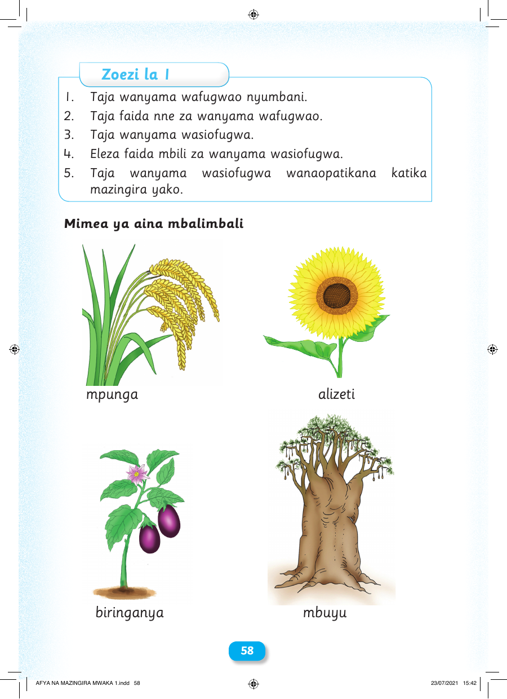

Zoezi la 1 1. Taja wanyama wafugwao nyumbani. 2. Taja faida nne za wanyama wafugwao. 3. Taja wanyama wasiofugwa. 4. Eleza faida mbili za wanyama wasiofugwa. 5. Taja wanyama wasiofugwa wanaopatikana katika mazingira yako. Mimea ya aina mbalimbali mpunga alizeti biringanya mbuyu 58 AFYA NA MAZINGIRA MWAKA 1.indd 58 23/07/2021 15:42